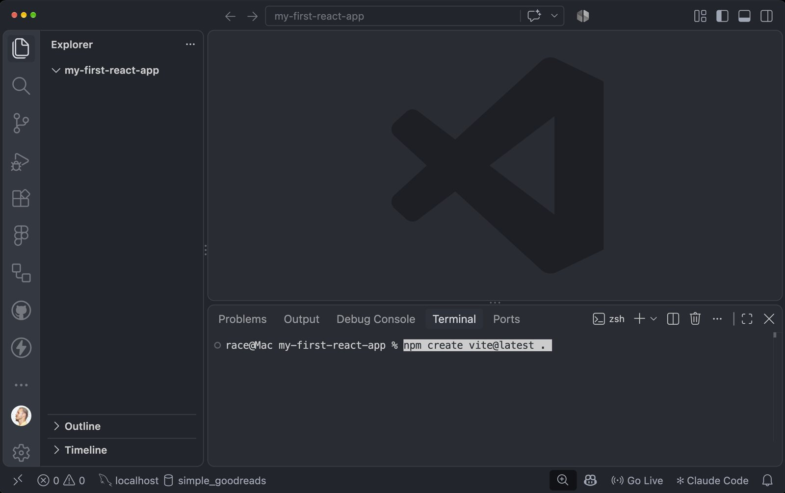
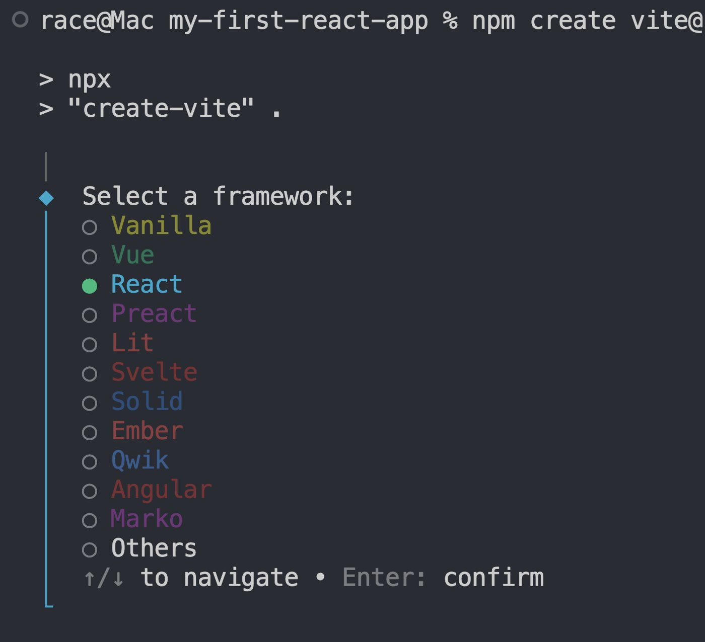
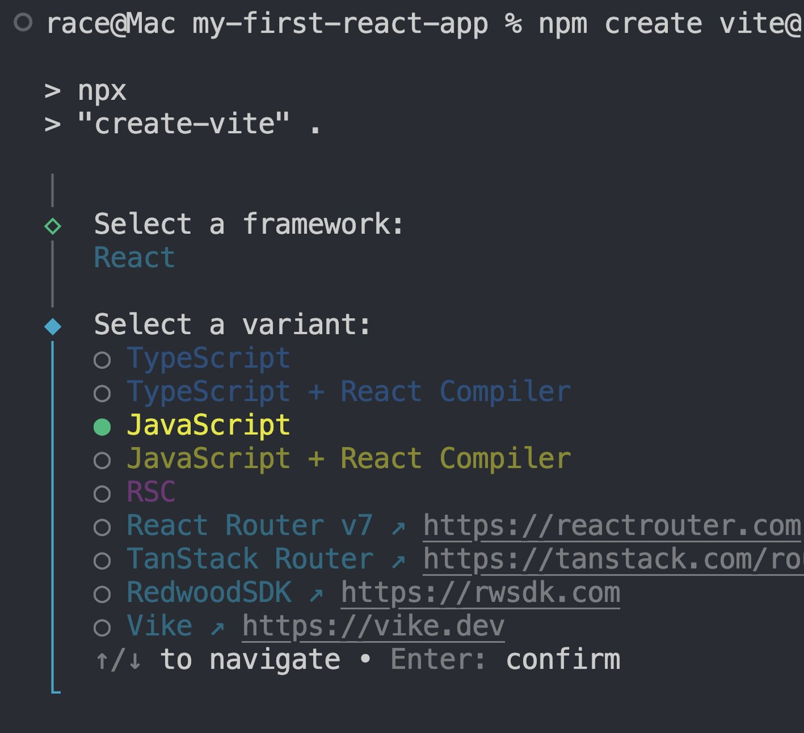
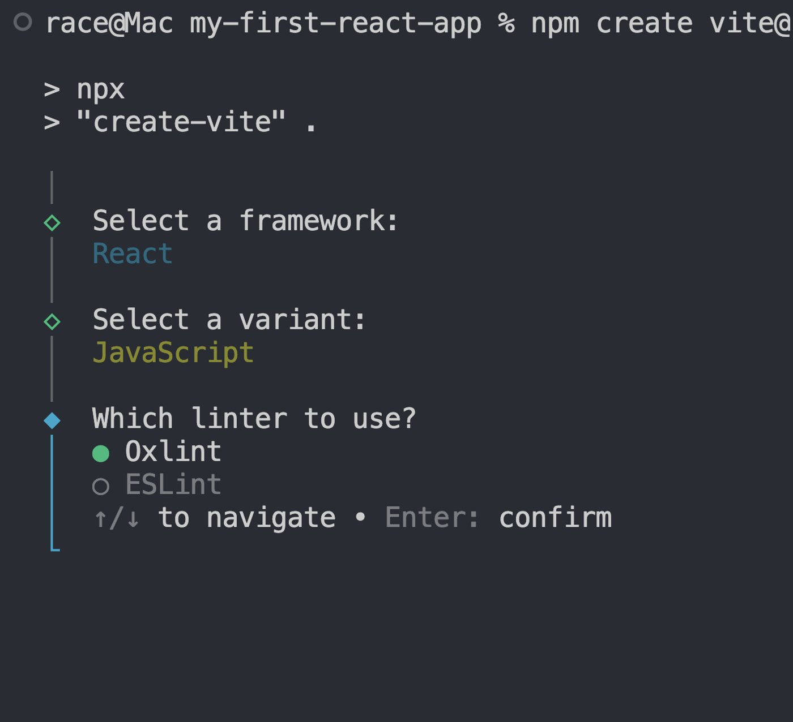
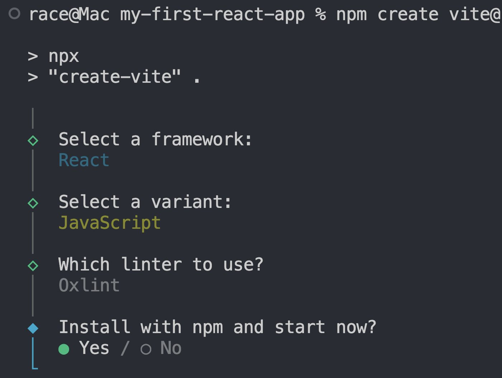
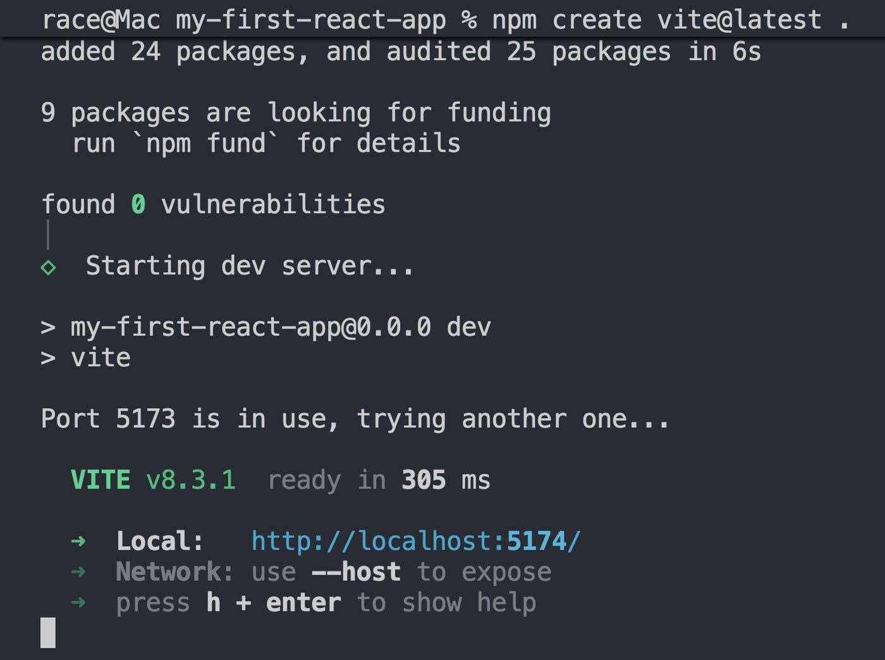
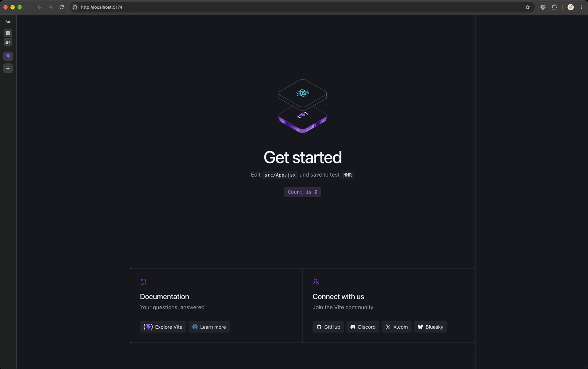
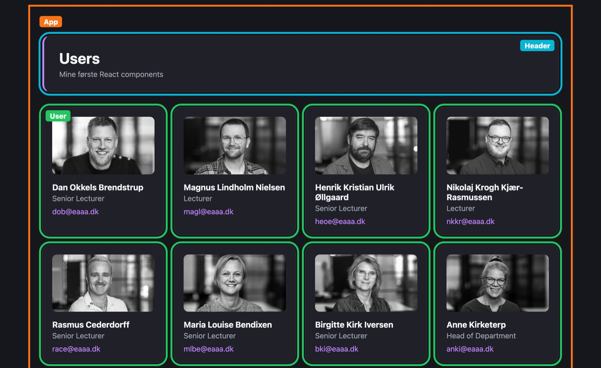

Kun UI'et
React bygger det, brugeren ser og klikker på. Ikke server, database eller routing.
Fra nyt Vite-projekt til et grid af users. Components, props og state i jeres egen my-first-react-app.
my-first-react-appHeader og User.map(), key og et gridHeader-componentUser-component, der får data via propsUser pr. personHver del af dagen ender med en øvelse i jeres eget projekt. Byg med, mens vi går.
Et JavaScript-bibliotek til at bygge brugerflader. Lavet af Meta og brugt af Facebook, Instagram, Netflix og Airbnb.
React bygger det, brugeren ser og klikker på. Ikke server, database eller routing.
UI'et bygges af små, genbrugelige dele. Siden opdateres selv, når data ændrer sig. Stort økosystem og stort jobmarked.
React bygger siden i browseren med JavaScript. Det er client-side rendering, som I præsenterede i sidste uge.
const grid = document.querySelector("#grid");
for (const user of users) {
grid.insertAdjacentHTML(
"beforeend",
`<article>
<h2>${user.name}</h2>
<p>${user.title}</p>
</article>`
);
}function App() {
return (
<section className="grid">
{users.map(user => (
<article key={user.id}>
<h2>{user.name}</h2>
<p>{user.title}</p>
</article>
))}
</section>
);
}Imperativt beskriver I hvordan, trin for trin. Deklarativt beskriver I hvad siden skal vise, og React finder selv ud af DOM'en.
I ser det i praksis om lidt i DevTools.
Vite er et build-værktøj og en udviklingsserver. Den forstår JSX og opdaterer siden, så snart I gemmer.
my-first-react-app, der hvor du har dine kodeprojekternode -v. Mindst 20.19 eller 22.12npm create vite@latest .Punktummet betyder: lav projektet i den mappe, du står i.
Næste gang du vil starte serverennpm run devLad være med at overtænke alle de nye ting. Gør det, og følg trinene.

my-first-react-app, og mappen er tomcdnpm create vite@latest .Står der en anden mappe i Explorer, så åbn den rigtige med File › Open Folder.



Piletasterne flytter valget. Enter bekræfter.



Er port 5173 optaget, vælger Vite selv den næste, fx 5174. Brug altid den URL, terminalen viser.
my-first-react-app/ ├── node_modules/ ├── public/ ├── src/ │ ├── App.css │ ├── App.jsx │ ├── index.css │ └── main.jsx ├── index.html ├── package.json └── vite.config.js
index.htmlÉn tom <div id="root">. Her bygger React sidensrc/main.jsxStarter appen og monterer <App /> i #rootsrc/App.jsxJeres første component. Her skriver I koden i dagnode_modules/Installerede pakker. Rør den ikkepackage.jsonProjektets pakker og scripts, fx npm run devsrc/App.jsx, og gem. Siden opdaterer uden genindlæsningsrc/main.jsx. Find stedet, hvor <App /> bliver vist i #rootDet blink er Virtual DOM: React ændrer kun den ene tekst, der er forskellig.
Det, en component returnerer. Vite oversætter det til almindelig JavaScript, som browseren forstår.
export default function App() {
const name = "Rasmus";
return (
<>
<h1 className="title">Users</h1>
<h2>Hello, {name}</h2>
<img src="logo.png" alt="" />
</>
);
}className i stedet for classclass er et reserveret ord i JavaScript<img />, <br />, <input /><>...</>{ } indsætter JavaScriptEn variabel, en template literal eller en .map()src/App.jsx med koden til højreApp.css og index.css. Behold filernename, og gem<p> eller et link<> og </>. Læs fejlen. Sæt dem ind igenimport "./App.css";
export default function App() {
const name = "Rasmus";
return (
<>
<h1>Users</h1>
<h2>Hello, {name}</h2>
</>
);
}Test: siden viser kun jeres overskrift og jeres navn.
Components, der får data via props og husker data i state. Det er hele tankegangen.
En funktion, der returnerer JSX. Små dele, som sættes sammen til hele siden.
I kender: en funktion, I kalder igen og igen
Forælderen sender data ned til barnet. Samme component, forskellige data.
I kender: <img src="..." alt="..."> og argumenter til en funktion
Data, som componenten husker, mens siden er åben. Ændrer state sig, tegnes UI'et igen.
I dag: just do it. I morgen: forstå det
Papir, iPad eller et screenshot. Sammenlign med jeres sidemakker: hvor har I skåret forskelligt?

App ├── Header └── User × én pr. person
User skal bruge name, title, mail og imageApp har listen af users og sender dem videreDet er det træ, I bygger resten af dagen. Der findes ikke ét rigtigt svar.
Navnet starter med stort bogstav, så React kan kende forskel på jeres components og almindelige HTML-tags.
export default function Header() {
return (
<header>
<h1>Users</h1>
<p>Mine første React components</p>
</header>
);
}import Header from "./components/Header";
import "./App.css";
export default function App() {
return (
<>
<Header />
</>
);
}export default i den ene fil, import i den anden. Samme moduler, som I brugte i jeres Express-routes.
Headersrc/componentsHeader.jsx i mappen<h1> fra App.jsx over i Header, og tilføj en <p>Header i App.jsx, og brug den som <Header /><h2>Hello...</h2> og name i App.jsx<header /> med lille h. Hvad sker der?export default function Header() {
return (
<header>
<h1>Users</h1>
<p>Mine første React components</p>
</header>
);
}Test: overskriften står præcis som før. Nu kommer den bare fra sin egen component.
src/components/User.jsx med koden til højreUser i App.jsx<User /> under <Header />export default function User() {
return (
<article className="user-card">
<img
src="https://raw.githubusercontent.com/cederdorff/race/master/images/users/race.webp"
alt="Rasmus Cederdorff"
/>
<h2>Rasmus Cederdorff</h2>
<p>Senior Lecturer</p>
<a href="mailto:race@eaaa.dk">race@eaaa.dk</a>
</article>
);
}Billedet fylder hele bredden indtil videre. Det retter vi med CSS i øvelse 9c.
// App.jsx
<User
name="Rasmus Cederdorff"
title="Senior Lecturer"
mail="race@eaaa.dk"
image="https://.../race.webp"
/>// User.jsx
export default function User({ name, title, mail, image }) {
return (
<article className="user-card">
<img src={image} alt={name} />
<h2>{name}</h2>
<p>{title}</p>
<a href={`mailto:${mail}`}>{mail}</a>
</article>
);
}{ name, title } henter felterne ud af ét props-objekt. Props går kun nedad, fra forælder til barn.
User sine egne data{ name, title, mail, image } i User-funktionen{name}, {title} osv.<User /> i App.jsx med tre forskellige personertitle fra én af dem. Hvad viser kortet?<>
<Header />
<User
name="Rasmus Cederdorff"
title="Senior Lecturer"
mail="race@eaaa.dk"
image="https://raw.githubusercontent.com/cederdorff/race/master/images/users/race.webp"
/>
<User name="..." title="..." mail="..." image="..." />
<User name="..." title="..." mail="..." image="..." />
</>Test: tre kort med tre forskellige personer. Én component, tre gange.
children
<Header>
Mine første React components
</Header>children
export default function Header({ children }) {
return (
<header>
<h1>Users</h1>
<p>{children}</p>
</header>
);
}Prøv det på jeres Header, hvis I vil. I bruger children i chatbot-tutorialens step 1.
.map()Tre <User /> skrevet i hånden holder ikke, når der kommer flere. Eller 900.
<User name="Rasmus" ... />
<User name="Maria" ... />
<User name="Dan" ... />const users = [
{ id: "fTs8...", name: "Rasmus", ... },
{ id: "ZfPT...", name: "Maria", ... }
];
{users.map(user => (
<User key={user.id} name={user.name} ... />
))}key skal være unik, så React kan holde styr på hvert element mellem to renders. Brug id.
<User /> til users.map()users-array i App. Kopiér 3-4 objekter fra users.json ↗<User />User pr. objekt med users.map()key. Læs advarslen i Console. Sæt den ind igenexport default function App() {
const users = [
// kopiér objekter fra users.json herind
];
return (
<>
<Header />
{users.map(user => (
<User
key={user.id}
name={user.name}
title={user.title}
mail={user.mail}
image={user.image}
/>
))}
</>
);
}Det er trin 2 i Thinking in React: en statisk version med faste data.
index.css med koden til højreApp ind i <main className="app"> i stedet for <>.app i App.css:root {
color-scheme: dark;
--bg: #16171d;
--surface: #1f2028;
--border: #2e303a;
--text: #9ca3af;
--text-h: #f3f4f6;
--accent: #c084fc;
}
body {
margin: 0;
background: var(--bg);
color: var(--text);
font-family: system-ui, sans-serif;
}.app {
max-width: 1100px;
margin: 0 auto;
padding: 40px 20px;
}Farverne er de samme som i Vites startside. var(--accent) bruger en variabel fra :root.
App.css--accent i index.css. Hvad ændrer sig?header {
margin-bottom: 32px;
padding: 28px 32px;
border: 1px solid var(--border);
border-left: 4px solid var(--accent);
border-radius: 16px;
background: var(--surface);
}
header h1 {
margin: 0;
color: var(--text-h);
}
header p {
margin: 6px 0 0;
}Det er almindelig CSS. header rammer det <header>-tag, som jeres Header-component returnerer.
users.map(...) ind i en <section className="grid">App.css.grid {
display: grid;
grid-template-columns: repeat(auto-fill, minmax(220px, 1fr));
gap: 20px;
}
.user-card {
padding: 20px;
border: 1px solid var(--border);
border-radius: 16px;
background: var(--surface);
}
.user-card img {
width: 100%;
aspect-ratio: 16 / 9;
object-fit: cover;
border-radius: 10px;
}Det er stadig className, ikke class.
transition i jeres .user-cardApp.css.user-card {
/* ...det, der allerede står... */
transition: border-color 0.2s, transform 0.2s;
}
.user-card:hover {
border-color: var(--accent);
transform: translateY(-4px);
}
.user-card h2 {
margin: 14px 0 4px;
color: var(--text-h);
font-size: 1.1rem;
}
.user-card p { margin: 0 0 10px; }
.user-card a {
color: var(--accent);
text-decoration: none;
}Test: navn, titel og mail står pænt, og kortet løfter sig, når musen er over det.
Data fra en URL kræver useState og useEffect. I dag skriver I dem. I morgen ser vi på, hvad de gør.
const [users, setUsers] = useState([]) giver jer users og en funktion til at ændre dem.
Kald setUsers, og UI'et tegnes igen. UI = f(data)
Kører, efter componenten er vist. Med [] til sidst kører den kun én gang.
Godt sted til at hente data
Samme fetch, await og response.json(), som I har brugt før.
Det eneste nye er, hvor koden står
useState og useEffect fra "react"const users = [...] med useState([])useEffect med fetchUsers() lige underimport { useEffect, useState } from "react";
export default function App() {
const [users, setUsers] = useState([]);
useEffect(() => {
async function fetchUsers() {
const url = "https://raw.githubusercontent.com/cederdorff/race/refs/heads/master/data/users.json";
const response = await fetch(url);
const data = await response.json();
console.log(data);
}
fetchUsers();
}, []);
// return (...) som førKun headeren vises lige nu. users er stadig et tomt array.
console.log(data) med setUsers(data)<article> pr. useruseEffect(() => {
async function fetchUsers() {
const url = "https://raw.githubusercontent.com/cederdorff/race/refs/heads/master/data/users.json";
const response = await fetch(url);
const data = await response.json();
setUsers(data);
}
fetchUsers();
}, []);Header og User er ikke ændret. Kun stedet, data kommer fra.
fetch(url)Effecten henter JSON, efter første rendersetUsers(data)State ændrer sigApp kører igenNu med alle users i stedet for nulusers.map()Én <User /> pr. objektname, title, mail, image ned i UserComponents, props og state. Det er Thinking in React i én app.
node_modules kommer ikke med. Den står allerede i .gitignore.
Step 1 og 2 i tutorialen bruger præcis det, I lige har lavet. Nu i et større projekt.
Header og User i egne filerchildrenusers-array, .map() og key.map()App, sendt ned via propscd frontend, npm install og npm run dev. Advarslerne fra npm install er forventedenpx degit --force bewildergeist/chatbot-react-postgres#pr-1-startProjektet bruger React Router, så filerne ligger i app/routes/ i stedet for src/. Det er stadig Vite og React. Routing kommer i morgen.
Step 1 og 2 skal være færdige til i morgen. Det, I ikke når i dag, laver I hjemme.